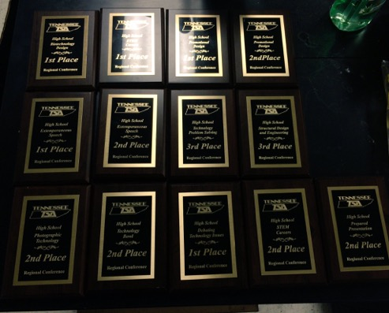
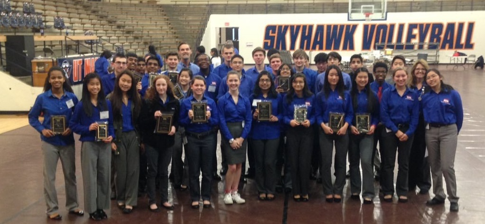
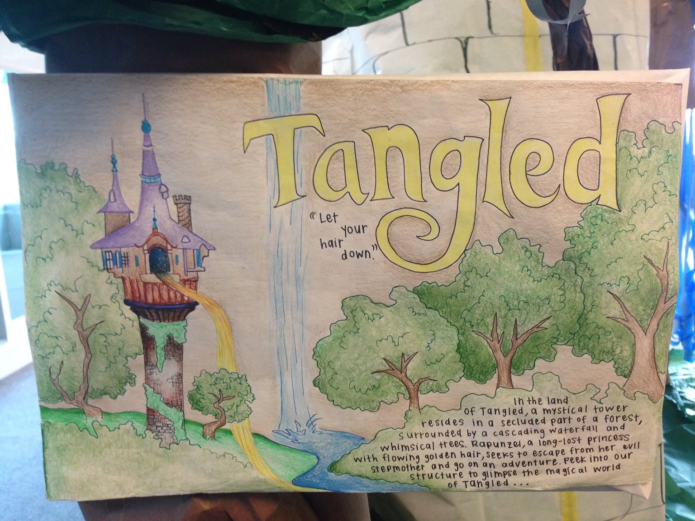
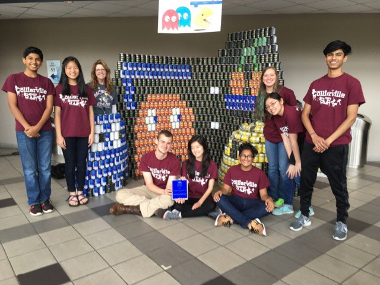
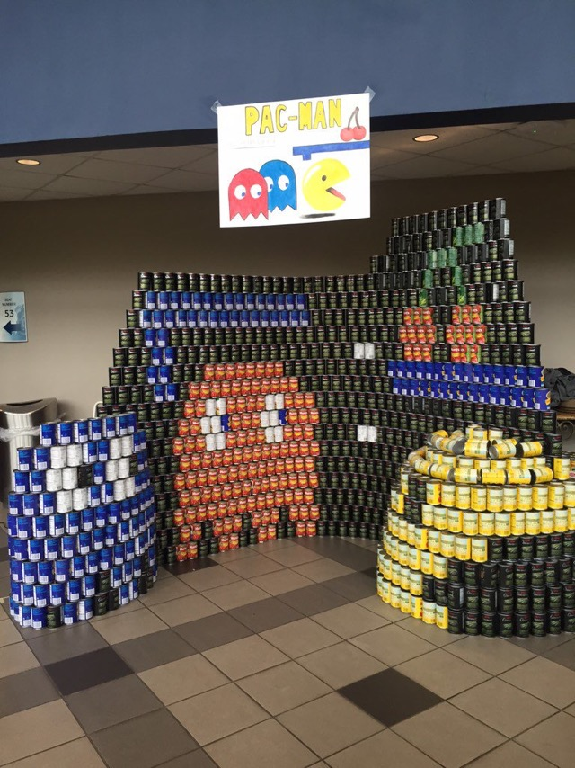

The Colors of TSA
Scarlet represents the strength and determination of the technology education students and teachers to obtain their goals.
White represents high standards, morals, and religious beliefs.
Our Officers
Chapter Activities
TSA Competitions 
Every year, our chapter competes at the local, state, and national levels for TSA competitions. Over the years, our students have seen much success in their work and have found a love for science through TSA.
Paper Power 
In the annual Paper Power Competition, local high school students are tasked to create artwork on site using recycled paper to promote environmental awareness. This year, our chapter had two teams compete with a Disney's Tangled theme.
CANstruction  
Every year, the CANstruction competition at the Univeristy of Memphis challenges students to create a 3-D model of their choice using only cans. After the competition, the structures are taken down, and all the cans are donated to charity. Last year, our school constructed a replica of PacMan.